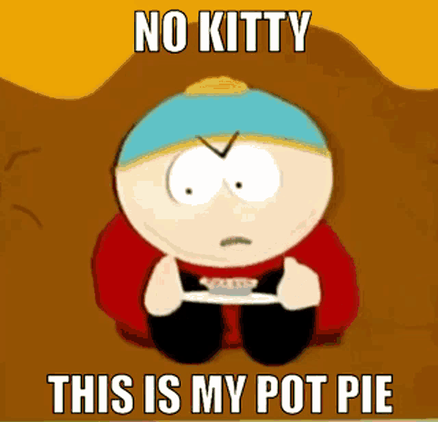

not pot brownies! pot pies!!

So i guess you want to learn how to make the thing im talking about. well as long as the recipe isnt to long then ill copy it from this website i found
ingredients
filling
- third cup butta
- third cup onion
- third cup flour
- half teaspoon of salt
- half teaspoon pepper
- one and one three quarter broth
- theres more but im lazy and i get the point i think
directions
- heat something up
- mix something in a bowl probably
- get the flour and do stuff
- once again im lazy and i get the point